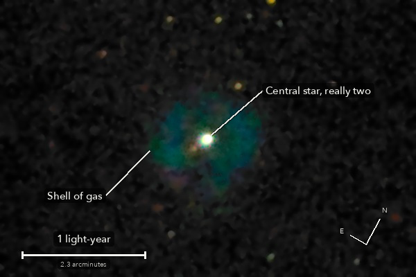

The Crystal Ball Nebula
NGC 1514, a planetary nebula in Taurus
Two stars at the centre, one of them dying, wrapped in the shell of gas it threw off. In 1790 it changed William Herschel's mind: a star inside a glow showed him that not every faint smudge in the sky is a crowd of stars too far away to see apart.
What you are looking at

Swipe sideways to see the rest. Tap the picture for full size.
- Distance
- Roughly 1,500 light-years (not well known)
- This picture spans
- 3.4 light-years
- The light left
- Around the year 500, soon after the fall of Rome
- The shell is
- About a light-year across, and too faint to see in any one photo
For photographers
3.5 minutes of light; the mount smeared most of the rest.
- Exposures
- 14 x 15 s at ISO 3200: 3.5 minutes
- Frames
- 25 taken on target, 14 kept. 3 were centring frames; 8 smeared in one direction while the mount's hold settled and in single frames after (stars 6.1 to 9.7 arcsec, stretched 1.6 to 2.9 to 1). The sky was clear
- Sampling
- 0.776 arcsec per pixel: one pixel per 2 x 2 colour cell, never enlarged. Stars 4.9 arcsec wide (half-flux)
- Field
- 7.8 x 5.2 arcmin, cropped round the central star from one sensor frame and turned by quarter turns only
- When
- 9 October 2026, after midnight, over 10 minutes. 48 to 50 degrees up, no Moon
- Field rotation
- 0.5 degrees over the run, corrected in registration (second-order fit on 50 or more stars)
- Calibration
- No darks and no flat frames were taken: hot pixels found from the run itself (21,000 to 23,000 per colour plane) and repaired; vignetting and dust not corrected
- Stacking
- RAW colour planes (no demosaic), hot pixels by 3 x 3 median, registered on stars with rotation, sigma-clipped weighted mean, one sky constant per colour per frame. Noise 3.6 times lower than one frame (3.7 expected)
- Sky
- In the picture only: one plane per colour fitted to the sky more than 101 arcsec from the star, taking off a ramp of 7 to 10 DN across the picture
- What is real
- The shell repeats in two independent half stacks (13.5 and 13.6 DN, shapes correlated 0.87). The star's own glare is 8 percent of the shell's light. Texture inside the shell is noise
- Finish
- The camera's daylight white balance and colour matrix. Arcsinh stretch on brightness, colour from an 8 px blur where faint, the star's clipped core white. Black at the 40th percentile, gamma 0.9, saturation x 1.4. Dark sky smoothed (median 5 px, bilateral 4 px)
- Telescope
- Celestron 8SE Schmidt-Cassegrain: 203 mm aperture, 2,081 mm focal length by plate solve of this stack, f/10.3
- Camera
- Sony a6000, stock, at prime focus: APS-C 23.5 x 15.6 mm, 6000 x 4000, 3.9 micron pixels, RAW
- Mount
- Sky-Watcher EQ6-R, unguided. Set down without leveling, 13.4 degrees off the pole; aligned from four plate-solved photos, both axes driven from that model
© 2026 Brad Gessler · Celestron 8SE (8 inch, 2,082 mm) and Sony a6000 on an EQ6-R · San Francisco Bay Area · night of 8 October 2026
Capture and mount: Observatory (Elixir on a Raspberry Pi 3). Stacking: numpy, SciPy, OpenCV, rawpy. Plate solving: astrometry.net. Stacked from the camera's RAW frames. Nothing generated.
© 2026 Brad Gessler. The pictures and the words are his own; all rights reserved.